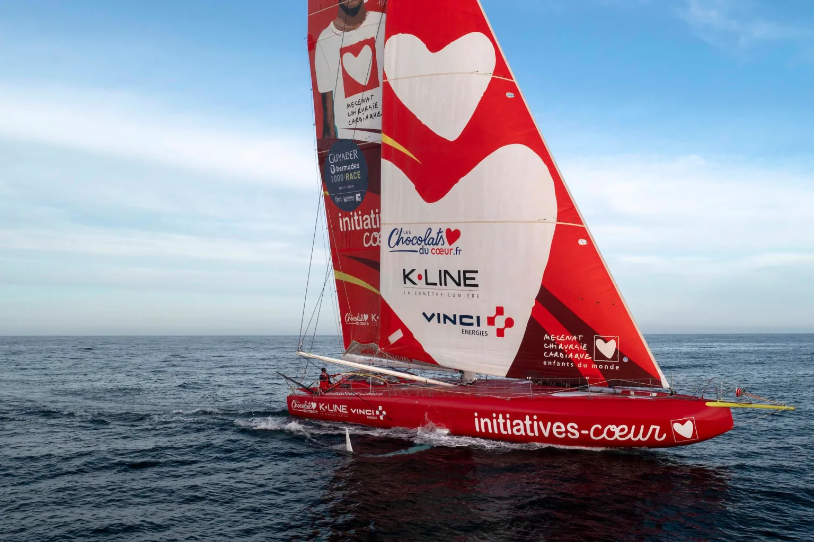

Le projet
Défier les océans pour sauver des enfants
Initiatives-Cœur est un projet de course au large qui finance la chirurgie cardiaque d’enfants en situation de précarité. Chaque mille parcouru sur l’océan, chaque sponsor mobilisé contribue à une opération qui sauve une vie.

La skippeuse
Violette Dorange
À vingt-quatre ans, Violette Dorange s’est affirmée comme l’une des figures montantes de la course au large. Sortie du Vendée Globe 2024-2025 avec une notoriété immense et une réputation d’authenticité, elle prend en 2026 les commandes du projet Initiatives-Cœur en préparation du Vendée Globe 2028.
Elle incarne une nouvelle génération de marins : sportifs de très haut niveau, mais aussi engagés sur des causes qui dépassent la performance pure. Le mariage avec Initiatives-Cœur va de soi.
Le calendrier sportif
Les prochaines courses
Avant le grand rendez-vous de 2028, deux étapes majeures rythment la saison : la Vendée Arctique au départ des Sables-d’Olonne en juin, puis la mythique Route du Rhum entre Saint-Malo et Pointe-à-Pitre en novembre. Le bateau y est suivi par les villages des départs et arrivées, où le public peut le découvrir.
Le bateau
Un IMOCA de dernière génération
Lancé en 2022, l’IMOCA Initiatives-Cœur intègre les dernières avancées techniques de la classe : foils larges qui permettent au bateau de voler au-dessus de l’eau, proue arrondie qui dévie les paquets de mer, cockpit fermé qui protège la skippeuse. Dix-huit mètres de coque, vingt-neuf mètres de mât, seize tonnes — un objet de course extrême.